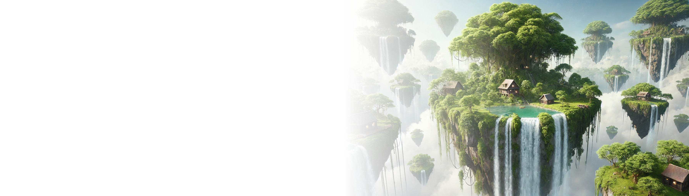

Hành động nhỏ
Tác động lớn
Mỗi bước nhỏ bạn thực hiện hôm nay sẽ lan tỏa những thay đổi tích cực cho tương lai của hành tinh.

Hành tinh xanh
Tương lai sáng

Đã đến lúc hành động


Dẫn đầu con đường thay đổi sinh thái
Chúng tôi là những người ủng hộ môi trường đầy nhiệt huyết, cam kết bảo vệ hành tinh và thúc đẩy lối sống bền vững.

Tạo nên tác động, Từng bước một

Khí hậu

Đại dương

Hoang dã

Phá rừng

Năng lượng

Rác thải
Khôi phục hệ sinh thái, cân bằng thiên nhiên.
Chúng tôi tập trung vào việc phục hồi các hệ sinh thái bị suy thoái để khôi phục sự hài hòa giữa thiên nhiên và con người, đảm bảo một môi trường bền vững và phát triển cho tất cả sinh vật.

Đạt được nhiều hơn, Cùng với nhau
Những dự án mang lại thay đổi ý nghĩa và giúp bảo vệ hành tinh cho thế hệ mai sau của chúng ta
Một tầm nhìn, nhiều cánh tay
Công việc của chúng tôi hướng đến việc bảo về và gìn giữ đại dương của chúng ta khỏi ô nhiễm rác thải nhựa